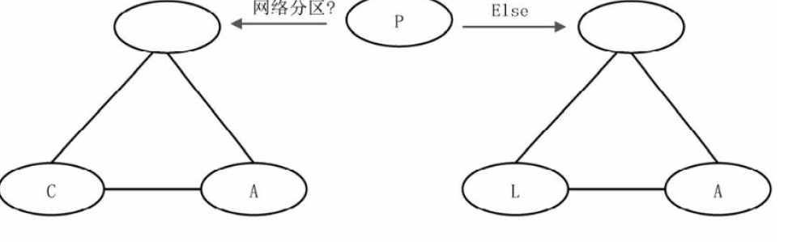

分布式相关理论
1. CAP
CAP 是分布式系统的三个指标：
- Consistency：一致性
- Availability：可用性
- Partition Tolerance：分区容错性
1.1 介绍
一致性
一致性指在更新操作完成之后，所有节点在同一时间的数据完全一致，不存在中间状态。
数据一致性可分为：
- 强一致性：任意时刻客户端获取到的各个节点数据都是一致的
- 最终一致性：允许存在中间状态，但要求经过一段时间之后，数据最终是一致的
- 弱一致性：允许部分数据不一致
注：数据库事务也有一致性的概念，这个一致性指系统从一个正确的状态到另一个正确的状态；而分布式场景中的一致性指各副本数据之间的关系。两个一致性没有任何联系。
可用性
可用性要求系统提供的服务必须一致是可用的状态，对于用户的每一个请求能在有限的时间内返回正常的结果。
其两个指标：
- 有限时间：系统的响应时间必须是一个用户可接受的值
- 正常结果：无论操作成功还是失败，系统能返回一个用户能够理解的响应。例如返回一个系统内存错误 OOM 便不是一个正常结果
分区容错性
系统在遇到网络分区故障时，仍然能够保证对外提供服务。
网络分区是系统中存在多个子网络，子网络之间通信异常，但内部通信是正常的，从而使系统被分为若干个区域。
1.2 CAP 的应用

在分布式系统中，P 是基本条件，因为分区是一种错误，它是必然会发生的，而不是一个可选项，如果不能保证 P，那么出现分区，系统便无法工作，这是无法接受的。所以，对于分布式系统，我们只能选择 C 或者 A。
CP系统
系统发生分区故障之后，客户端的任何请求都卡死或者超时，但是系统的每个节点都鞥你返回一致的数据。
AP系统
系统发生分区故障之后，客户端能够访问系统，但是不能保证获取到的数据是最新的数据。
1.3 CAP 的不足
- CAP 理论没有考虑网络延迟的问题，认为各节点的数据同步是瞬时的，与现实不符。这导致分布式大多选用 AP 方式
- CAP 只是一种状态的描述，对于工程领域以及系统设计并没有帮助
2. BASE定理
由于 CAP 的种种不足，ebay 的架构师提出了 BASE 理论，是对 AP 的延伸。
BASE 是 Basically Available（基本可用）、Soft state（软状态）和 Eventually consistent（最终⼀致性）三个短语的缩写，核心思想是即使无法做到强一致性，但可以采用适合的方式达到最终一致性。
基本可用
基本可用指系统出现故障之后，系统仍是可用的，但允许损失部分可用性，例如
- 响应时间增加
- 服务降级：流量高峰时，屏蔽一些功能维持系统稳定
软状态
软状态允许系统中的数据存在中间状态，这些中间状态不会影响系统的可用性，即允许不同节点的数据同步存在延迟
最终一致性
最终一致性要求数据副本在一定时间之后，能够达到一致的状态。
最终一致性可分为
- 因果一致性：进程 A 更新数据后通知进程 B，进程 B 对包含该项数据的范围都是 A 更新后的值
- 单调读：如果之前读到新的数据，后续读取不会得到更旧的数据。单调读一致性保证强于最终一致性，弱于强一致性
- 单调写：系统需要保证来⾃同⼀个进程的写操作被顺序执行
- 读写一致性：用户获取到的自身修改是最新的，其他用户的更新可能稍后才会看到
3. PACELC理论
分布式环境由于以下原因不存在绝对的强一致性：
- 信息传播需要时间，有时间就有延迟，有延迟就会产生不一致
- 在网络中传递的信息可能是过时的
- 网络是不可靠的
我们日常提到的强一致性，是从观察者的角度，即客户端获取的数据是一致的。PACELC 理论是 CAP 的拓展，其中 C、A、P 没有变化，而是引入了 Latency（延迟 L）和 E （Else）。

也就是说，当分区 P 出现时，需要在可用性 A 和一致性 C 中权衡；而当 P 出现时，需要在延迟 L 和 C 中做权衡。换句话说，达成一致的节点越多，响应速度越慢。
PACELC 的作用是提供以下指导意义：
- 半同步复制：例如 MySQL 主从架构，master节点只要收到一个 slave 节点写入磁盘成功的响应，即可将结果返回给客户端，减少响应时间。这样，即使 master 节点挂了，也有一个 slave 节点的数据是完整的；
- 主从分离：不要求主从之间的强一致性事务约束，从节点的数据可以存在一小段时间延迟。